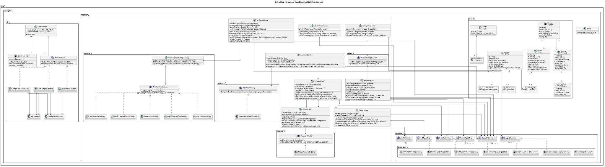
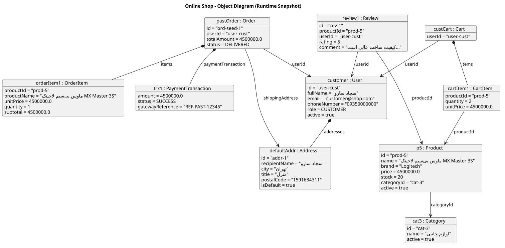
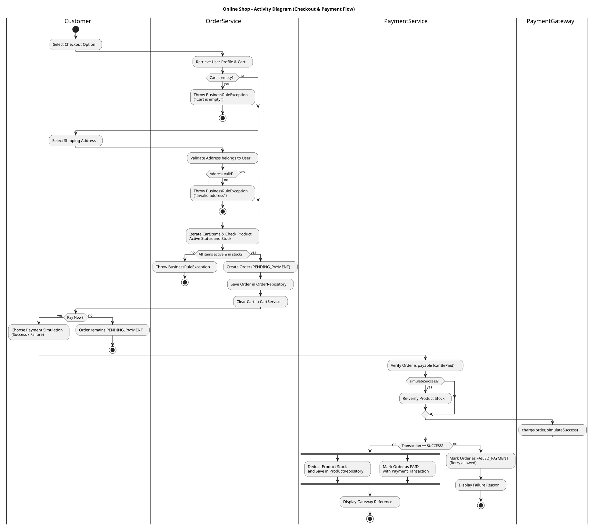
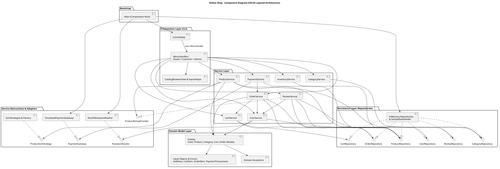
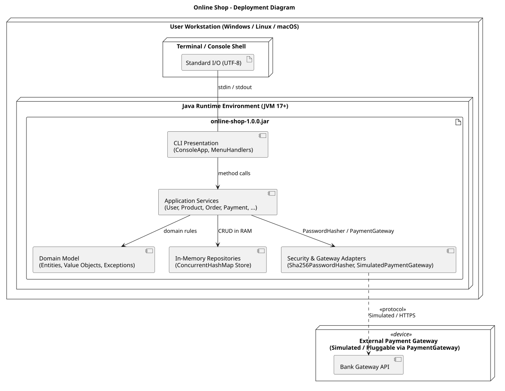
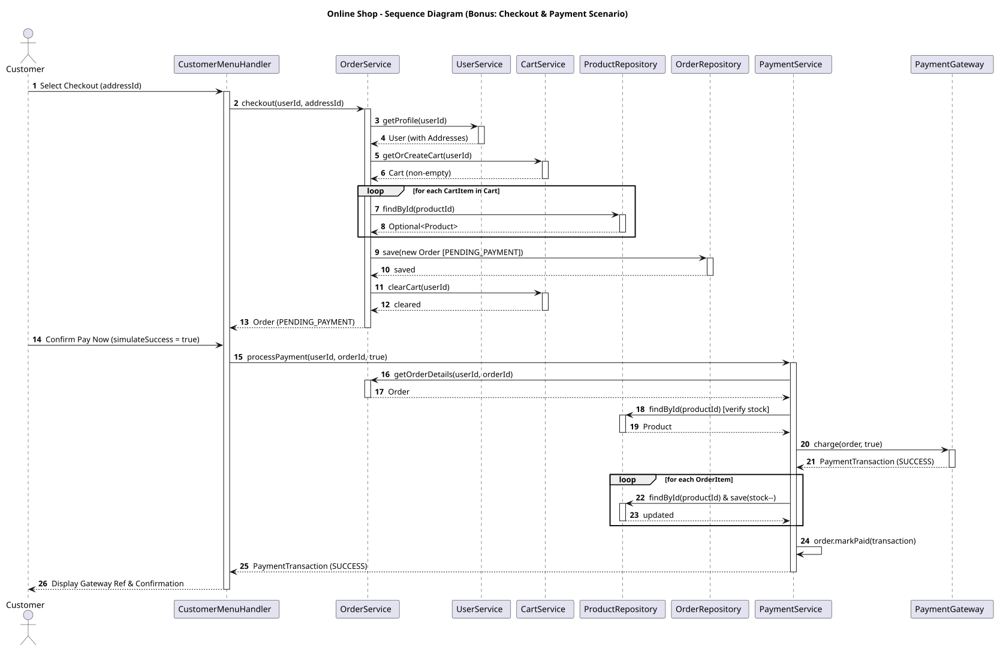

| نام و نام خانوادگی | شماره دانشجویی | نقش و وظایف |
|---|---|---|
| [نام عضو اول] | [شماره دانشجویی عضو اول] | بازطراحی SOLID سرویسها و مخازن، نمودارهای Class، Object و Sequence، تستها |
| [نام عضو دوم] | [شماره دانشجویی عضو دوم] | بازطراحی لایه CLI و استراتژیها، نمودارهای Activity، Component و Deployment، مستندسازی و README |
لینک مخزن GitHub پروژه: https://github.com/<username>/online-shop
سامانه فروشگاه آنلاین (Online Shop) یک نرمافزار ماژولار به زبان Java 17 و مبتنی بر Maven است که تمامی ۳۶ داستان کاربری (User Story) تعریفشده در فاز اول را در قالب یک معماری لایهبندیشده (Layered Architecture) پیادهسازی میکند. این سامانه سه نقش کاربری زیر را پشتیبانی مینماید:
در بررسی کد فاز اول، چند گلوگاه طراحی از جمله کلاس یکپارچه InMemoryDataStore، منطق مرتبسازی مبتنی بر switch در ProductService، وابستگی مستقیم PaymentService به منطق شبیهسازی درگاه، و کلاس حجیم ConsoleApp شناسایی شدند. در فاز دوم، ساختار کد به شرح زیر بازطراحی شد:
| اصل SOLID | مصداق نقض در فاز ۱ | اصلاح و بازطراحی انجامشده در فاز ۲ |
|---|---|---|
| SRP (تکمسئولیتی) |
کلاس InMemoryDataStore هم مخزن دادهها بود، هم هش رمز عبور را انجام میداد و هم دادههای اولیه را Seed میکرد. کلاس ConsoleApp نیز بیش از ۷۰۰ خط کد برای تمام نقشها داشت.
|
استخراج Sha256PasswordHasher، جداسازی SampleDataSeeder، تفکیک مخازن به ۶ کلاس تخصصی، انتقال محاسبه امتیاز به ReviewService، و تفکیک ConsoleApp به SessionContext، CatalogBrowserView، GuestMenuHandler، CustomerMenuHandler و AdminMenuHandler.
|
| OCP (باز/بسته) |
متد ProductService.sortProducts با switch پیادهسازی شده بود و افزودن معیار جدید مستلزم تغییر کد سرویس بود. درگاه پرداخت نیز در PaymentService سختکد شده بود.
|
تعریف رابط ProductSortStrategy و کلاسهای استراتژی مجزا همراه با ProductSortStrategyFactory؛ تعریف رابط PaymentGateway با پیادهسازی SimulatedPaymentGateway؛ و تعریف رابط MenuHandler برای توسعه منوها بدون تغییر ConsoleApp.
|
| LSP (جایگزینی لیسکوف) |
عدم وجود سلسلهمراتب استراتژی و هندلرهای منو با قرارداد یکسان. |
تمام پیادهسازیهای ProductSortStrategy، PaymentGateway، MenuHandler، مخازن و زیرکلاسهای DomainException قرارداد رابط والد را بدون عوارض جانبی غیرمنتظره رعایت میکنند و کاملاً جایگزینپذیرند.
|
| ISP (تفکیک رابطها) |
تمام سرویسها به کل InMemoryDataStore دسترسی داشتند (مثلاً CategoryService به کاربران و سفارشها دسترسی داشت). همچنین ProductService متدهای امتیازدهی را در خود داشت.
|
شکستن مخزن به ۶ رابط کوچک و تخصصی (UserRepository، CategoryRepository، ProductRepository، CartRepository، OrderRepository، ReviewRepository) و تعریف رابط ProductRatingProvider صرفاً برای خواندن میانگین امتیاز و تعداد نظرات.
|
| DIP (وارونگی وابستگی) |
سرویسهای سطح بالا مستقیماً به کلاس عینی InMemoryDataStore و متد ایستای هش رمز عبور وابسته بودند.
|
وابستگی تمام سرویسها به انتزاعها (*Repository، PasswordHasher، PaymentGateway، ProductRatingProvider) و تزریق پیادهسازیهای عینی از طریق Main به عنوان Composition Root.
|
این نمودار ساختار کامل کلاسها، رابطها، موجودیتها، اشیاء مقداری و وابستگیهای نسخه نهایی و Refactorشده را نمایش میدهد.

نمایی از نمونههای عینی (Instances) در زمان اجرا بر اساس دادههای اولیه سیستم و سبد خرید مشتری.

جریان گامبهگام عملیات ثبت سفارش (Checkout) و پرداخت (Payment) همراه با شاخههای تصمیمگیری، مدیریت خطا و کسر موجودی.

نمایش کامپوننتهای نرمافزاری، رابطهای ارائهشده/موردنیاز (Provided/Required Interfaces) و نحوه جداسازی لایهها.

نحوه استقرار و اجرای بسته نرمافزاری online-shop-1.0.0.jar بر روی ماشین مجازی جاوا (JVM 17+) و تعامل با ترمینال و درگاه پرداخت.

تعامل زمانی اشیاء و سرویسها در سناریوی ثبت سفارش و پرداخت موفق مطابق با کد نهایی:
